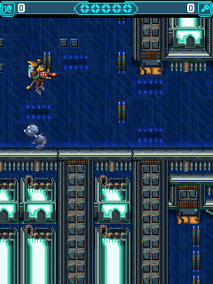

Our first investigation could inspect Ratchet’s package but didn’t have a matching execution adapter. With the later Java ME bridge in place, we found a more specific startup problem: where the game was asking for its resources.RC01
System.out could not find the game.
The game asked the class behind System.out to load fonts and audio. That bootstrap class couldn’t find application resources on the desktop JVM. We redirected those calls through the application loader and added a way to observe caught exceptions.RC01

Ratchet jumping in the original 240×320 level. Retained desktop original-game output, not a phone screenshot.
Open the image for the full original view.
RC90The retained route reached original movement, jumping, wrench and weapon-selector states. Its lifecycle pass parked the game, exported a report and resumed through the original prompt. Some exceptions were swallowed by the original game; the record distinguished those from a stop that prevented progress.RC03
Stop the loop when leaving.
Closing a bridge around an original infinite render loop needed more than finishing the Android screen. The compatibility exit guard stopped the loop, cleared its audio owner, joined workers and invoked the original destroyApp. Ordinary game timing and save behavior remained in their existing paths.RC05
We kept the original codes and dedicated jump shortcuts in the later shared controls, releasing touch roles on a mode change without dropping physical owners. This Java ME layer then gave us somewhere to start with Nowhere.RC02RC06NW01
About these records
The resource-loader adaptation changes the executed derivative in the documented places; original resource and vector-font work remain the game’s. Gameplay, handled exceptions, lifecycle checks, later host checks and separately retained shared-kit framework logs keep their individual scopes. The image is historical desktop guest output. Retained save serialization is not expanded into a new campaign-completion claim.
The receipts
Selected source lines, investigation notes and recorded feedback. Open a receipt for the original context and scope.
RC01 / The startup resource lookup used a bootstrap classCheckpoint investigation notes
Source: Ratchet_Clank_Going_Mobile_Bridge_v0.1.3_PRIVATE_CHECKPOINT.zip / Ratchet_Clank_Going_Mobile_Bridge_v0.1.3_PRIVATE/TECHNICAL_FINDINGS.txt · selected lines 1–19
Input Ratchet-Clank-Going-Mobile_J2ME_EN_v1010.jar, MIDP 2.0 / CLDC 1.0. MIDlet: ratchetandclank. Native framebuffer: 240x320. SHA256: da6d5b6d7f0f9151e7d0471bb74e47504bd401ebfd896524bd6de882f2ee3af1 Omni's initial result was missing execution capability, not a demonstrated game bug. It preserved and inspected the package but had no matching adapter. Runtime The bridge executes all eleven original game classes and original resources. Compatibility APIs cover MIDP display/canvas, Nokia DirectGraphics, media, record stores, and the original native text-entry form/alert path. The font vectors f3.v/f4.v are drawn by original game code. System substring fallback uses the original vector font. The original launcher icon is retained. A concrete startup incompatibility was resolved: original font/audio loading uses System.out.getClass().getResourceAsStream. Bootstrap classes cannot locate app resources on a desktop JVM. PatchGuest redirects only those resource calls through the application resource loader and adds observational caught-exception hooks.
RC90 / Historical image / Ratchet & Clank: Going MobileHistorical host capture
Source: Ratchet_Clank_Going_Mobile_Bridge_v0.1.3_PRIVATE/evidence/verified_03_jump.png
Retained historical host output. Original emulator chrome, where present, is part of the unchanged source image. No phone capture or phone performance is inferred.
Unchanged historical image. Source member: Ratchet_Clank_Going_Mobile_Bridge_v0.1.3_PRIVATE/evidence/verified_03_jump.png SHA-256: 251ac11d3dbdd77f972eac41a897667282dc7c5c997fe3f91744d96769a527a3 Ratchet jumping in the original 240×320 level. Retained desktop original-game output, not a phone screenshot. Scope: Historical original-J2ME host framebuffer; visually inspected, game only, zeroEXIF.
RC03 / Gameplay and resume with original handled exceptionsCheckpoint investigation notes
Source: Ratchet_Clank_Going_Mobile_Bridge_v0.1.3_PRIVATE_CHECKPOINT.zip / Ratchet_Clank_Going_Mobile_Bridge_v0.1.3_PRIVATE/TECHNICAL_FINDINGS.txt · selected lines 35–40
Evidence limits The final host pass reached original gameplay with movement, jump, wrench and weapon selector states, and pause. That pass reported zero caught exceptions. A separate lifecycle pass parked frames while backgrounded, produced a report while parked, and resumed through the original * prompt. It also recorded two original swallowed null-player stop exceptions in c.f; they did not prevent resume.
RC05 / Exiting an original infinite render loop cleanlyCheckpoint investigation notes
Source: Ratchet_Clank_Going_Mobile_Bridge_v0.1.3_PRIVATE_CHECKPOINT.zip / Ratchet_Clank_Going_Mobile_Bridge_v0.1.3_PRIVATE/CHANGES_v0.1.2.txt · selected lines 1–15
v0.1.2: integrate shared Gameplay UI Kit v1.1.1 Replaces the bespoke gameplay shell with the released library JAR. Adds continuous square digital pad, one-tap inline original keypad/return, J2ME subtitle and shared safe-area/header/control sizing. Preserves all existing original input codes and the dedicated 1/3 jump shortcuts. Hardware keys and axes now use the kit's owned sources so mode switches release touch without dropping hardware. System Back now runs session cleanup and exits to the caller, independently of the original right softkey. A runtime exit guard stops the original infinite render loop at the compatibility boundary; the original audio owner is cleared, workers joined and original destroyApp invoked. Normal guest timing, rendering, audio, assets and save behavior are unchanged. Startup fault persistence is initialized before the shared screen constructor. Reports use the existing independent writer and cache measured UI state without game-worker calls.
RC02 / Original jump shortcuts and developer-only branchesCheckpoint investigation notes
Source: Ratchet_Clank_Going_Mobile_Bridge_v0.1.3_PRIVATE_CHECKPOINT.zip / Ratchet_Clank_Going_Mobile_Bridge_v0.1.3_PRIVATE/TECHNICAL_FINDINGS.txt · selected lines 21–26
Inputs confirmed from txt_en.txt and actual bytecode 2/up: jump, hover, grapple; 4/left and 6/right: movement; 8/down: platform drop. 5/fire: contextual attack and confirmation; *: wrench; #: weapon selector. 1/3: native diagonal jumps. -6/-7: original softkeys, including pause. The unused 0/7/9 gameplay branches are gated by the original hardcoded false h.p developer flag, not ordinary gameplay. Numeric hardware keys still pass through.
RC06 / The shared contact repair and generic J2ME preparationCheckpoint investigation notes
Source: Ratchet_Clank_Going_Mobile_Bridge_v0.1.3_PRIVATE_CHECKPOINT.zip / Ratchet_Clank_Going_Mobile_Bridge_v0.1.3_PRIVATE/CHANGES_v0.1.3.txt · selected lines 1–26
v0.1.3 — normalization to Gameplay UI Kit 1.1.2 and Omni Handoff Kit v1 Uses the supplied, unchanged v1.1.2 JAR in javac and D8. Retains Ratchet's four-way 2/8/4/6 pad and separate original 1/3 diagonal jumps. The new kit's independent-pointer regression fix is included; Ratchet's required mappings, original execution, audio, save format, reporting and Back cleanup are unchanged. Build now generates strict Omni import/export/game/preparation metadata from the actual original JAR and APK inventory before signing. All 76 original root resources and eleven guest classes are declared, as are both Android resources and retained notices. Private contains the verified original JAR. Public export strips originals and rebuilds module-code/guest.dex with Omni's supported generic j2me compiler. No new Omni engine or package-specific export rule is required. Production Omni 0.5.7 importer/exporter checks passed with host Android-service adapters: private intake, readiness, signed export, original stripping, fresh Public reconstruction, exact resource hashes/class inventory, stable save identity, remove/restart/reimport, changed same-version replacement, repeated exports including an unrelated addition, and save retention without duplicates. Validation exports are temporary test outputs and are not a public release. Fresh host input/contact/geometry/configuration tests passed, including the exact Ratchet profile, original gameplay states and two shutdown/reopen cycles. Supplied kit evidence includes twelve API34 framework tests; those were not rerun here. Physical-phone startup, layout, touch, audible audio and Downloads export remain unverified in this environment. See evidence/v013/verification.json.
NW01 / Ratchet supplies the layer; zero-size drawing needs a no-opCheckpoint investigation notes
Source: Nowhere_Bridge_v0.1.1_PRIVATE_CHECKPOINT.zip / Nowhere_Bridge_v0.1.1_PRIVATE/IMPLEMENTATION.txt · selected lines 6–17
Original: MainApp MIDlet, MIDP 2.0 / CLDC 1.0, native 240x320. Classes a-j are obfuscated and reuse field names with different descriptors. Reflection-based state evidence must select fields by name AND type, never getField(name) alone. The original i Canvas starts its update thread from MainApp's constructor; initialize platform and save directory before constructing the MIDlet. MIDP implementation reused from the recent Ratchet J2ME work; required Nowhere additions are mutable images, byte-array PNG images, Graphics.clipRect and all 8 drawRegion transformations, Canvas.getGameAction, Display.vibrate acceptance, Player.getState/removePlayerListener, and RMS.getRecord returning bytes. Zero-size drawRegion is a no-op. Treating it as an error killed the original worker at the first room transition; that compatibility defect is fixed.